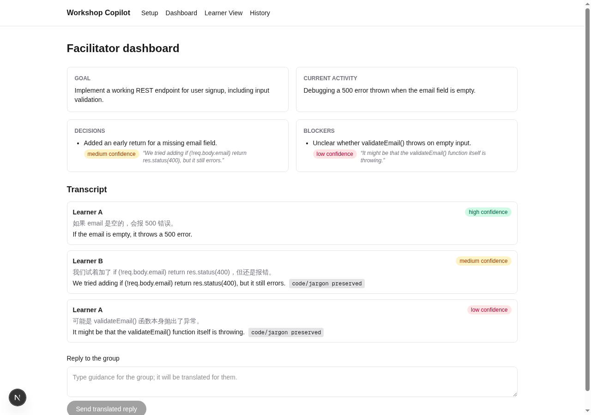
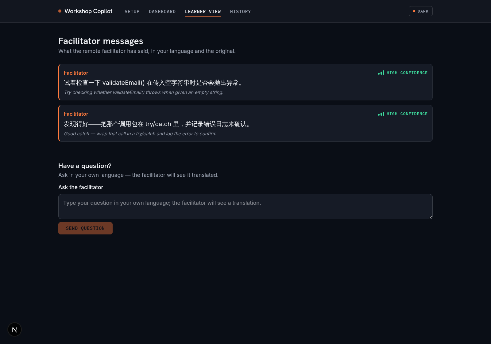
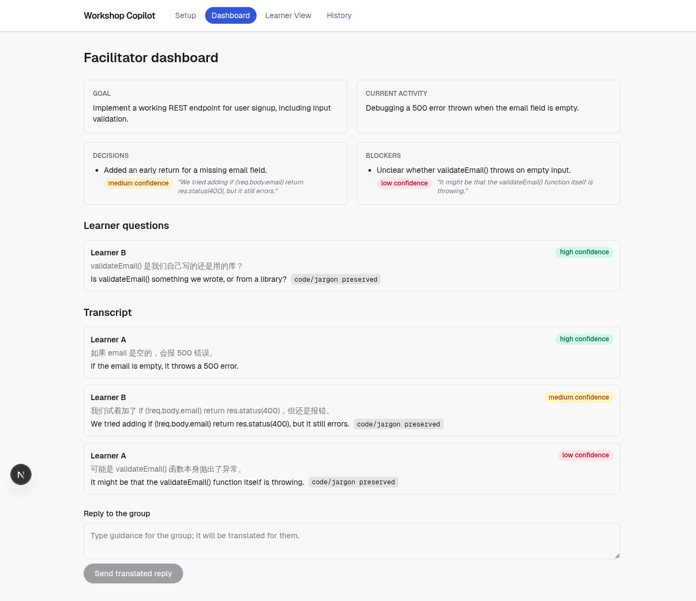
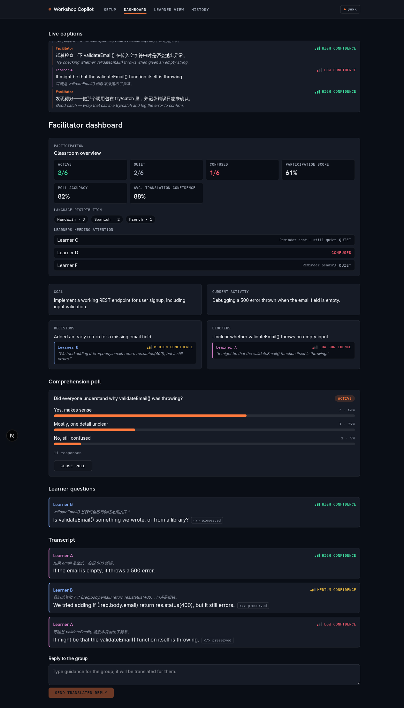
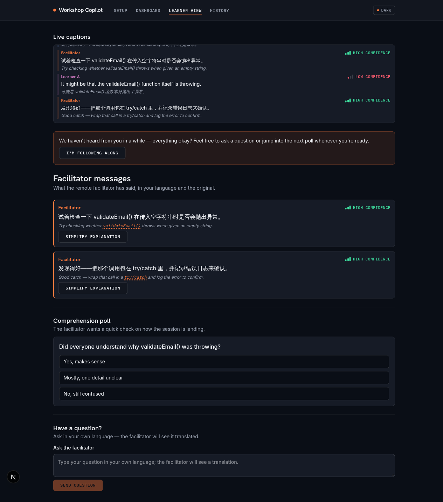
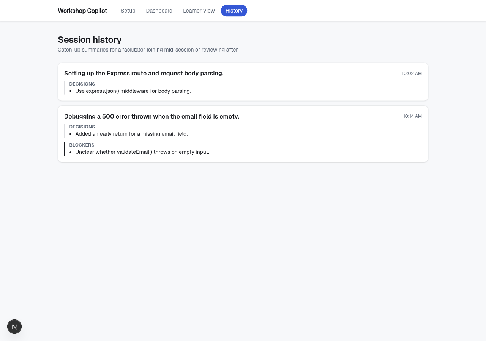

Live translation plus grounded understanding, so no one gets left behind in a workshop run in a language they don't speak.
We're solving real-time understanding between facilitators and learners, across languages, in a live session.

The goal comes from setup. Decision and blocker cards weren't typed by anyone — pulled live from the transcript, each linked to the exact line it came from.



Scan a QR code, no account setup. Captions translated live, original still visible. Learner questions land on the facilitator's side already translated — replies auto-translate back.


When a learner goes quiet too long, the facilitator gets nudged — and the learner gets a gentle prompt too. And translation never mangles code: validateEmail() and req.body.email pass through untouched.
A learner joining late doesn't scroll a wall of transcript — they get a grounded catch-up summary instead, citing the same transcript lines the dashboard cards do.

A learner going quiet in a language the facilitator doesn't speak used to be invisible — now it's a card on the dashboard.
Real Postgres-backed sessions with role-scoped, opaque learner join tokens — not a slide.
validateInsightDraft rejects any AI insight citing outside its own transcript batch. Deepgram, DeepL, and Claude are shipping APIs we can call today.
Breaking Language Barriers — live translation plus grounded understanding, so no one gets left behind in their own workshop.